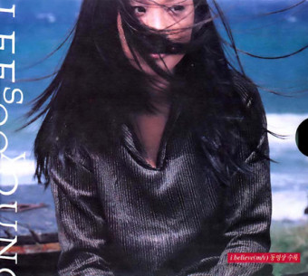

I Believe
이수영
그대 그약속-을 기억하고 있을까-요
I believe I believe I believe
많이 변했을 내 모습을 알아볼까-요
And I believe I believe I believe
니가 떠나던 날 너의 빈 책-상위에
새겨져- 있- 던 그말을-- 난 기-억해-요
오늘이 바로 그대 약속-한 그날인-걸-요--
오지 못할-거-란걸 알고 있어
앞으로도 영원-히- 볼 수 없-다는 것-을-
이젠 이세상에 너란 사-람은 없는거니
내가 잘못 안-것이길 빌고- 있어
우리- 약속한- 이곳에-서-
처음부터 운-명이란 걸 난 느꼈어-요
I believe I believeI believe
친근한 말 한 -마디조차 한 적 없지-만
And I believeI believe I believe
슬픈 그대 얼굴 이유를 알-았을때
애써 담-담-한 표정만-- 짓고- 있었- 죠
연락하기로 해 웃으며 말-하던
너는- 어-디있-니
오지 못할-거-란걸 알고 있어
앞으로도 영원-히- 볼 수 없-다는 것-을-
이젠 이세상에 너란 사-람은 없는거니
내가 잘못 안-것이길 빌고- 있어
우리- 약속한 이곳에서---
Good bye My Life
이수영
문득 말하고 싶었죠
우리 다시 시작 할 수는 없는지
잠시 울리다 끊어진 전화에도 나는 혹시나
그댄걸 느껴요
잊으려고 친구를 만났죠 아무 소용 없다는걸 난 알아요
그 언젠가 그대 아파할 때 하얗게 밤새던
그 추억도 이젠 나의 몫이 아니겠죠
사랑해요 떠나지 말아요
혼자 있다 그대 보고 싶을 땐 난 어쩌면 좋아요
내가 먼저 보내야 할까요
새로운 연인이 기다리나요
나보다 더 행복하게 해줄 것 같다면
Goodbye my love
잊으려고 친구를 만났죠
아무 소용 없다는걸 난 알아요
그 언젠가 그대 아파할 때 하얗게 밤새던
그 추억도 이젠 나의 몫이 아니겠죠
사랑해요 떠나지 말아요
혼자 있다 그대 보고 싶을 땐 난 어쩌면 좋아요
내가 먼저 보내야 할까요
새로운 연인이 기다리나요
나보다 더 행복하게 해줄 것 같다면
Goodbye my love